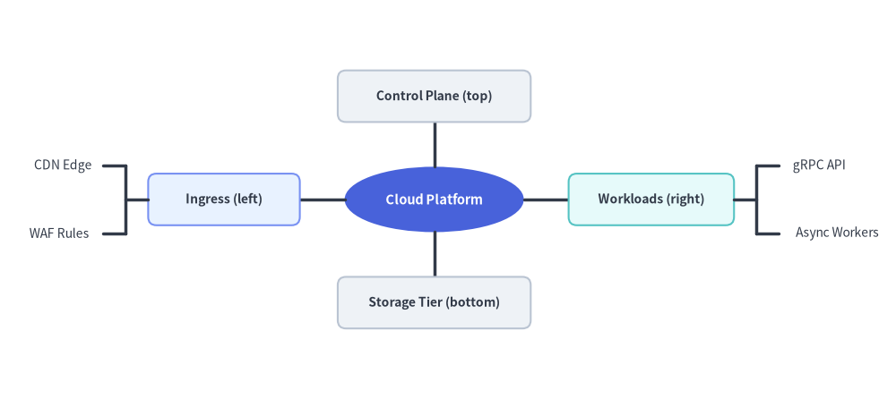
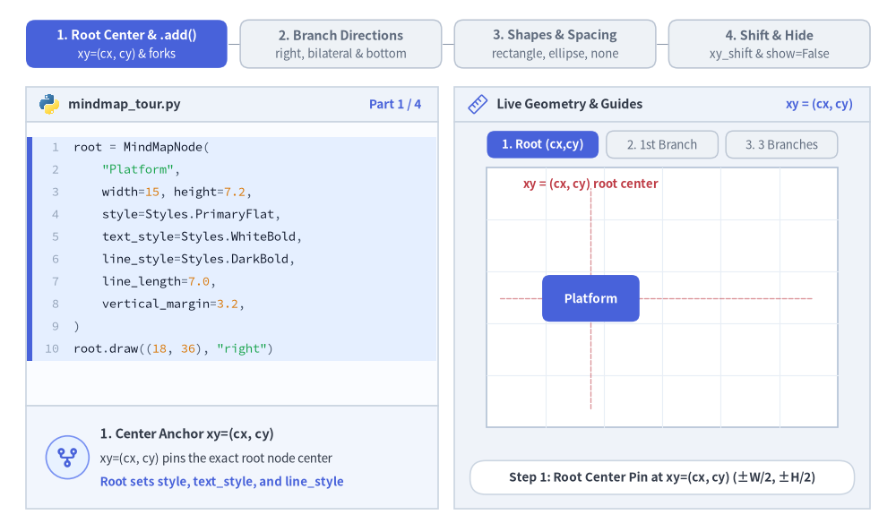
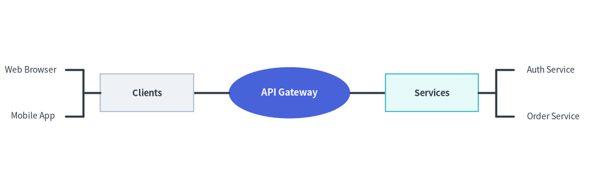
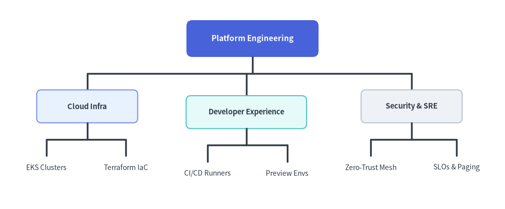

MindMap（マインドマップ）
MindMapNode コンポーネントは、中心のルートトピックから放射状・多方向に広がるマインドマップや階層型機能マップを描画します。
ブランチは左・右・上・下の各方向へ展開でき、直角のエルボー接続線が自動的にルーティングされます。

Source Code
from drawlib.canvas import save, setup
from drawlib.smartarts import MindMapNode
from drawlib.styles import Styles
setup(width=130, height=58)
root = MindMapNode(
"Cloud Platform",
shape="ellipse",
width=26,
height=9.5,
style=Styles.PrimaryFlat,
text_style=Styles.WhiteBold.patch(text_size=10.5),
line_style=Styles.DarkBold,
line_length=6.5,
horizontal_margin=3.5,
vertical_margin=3.8,
children=[
# Left Branch (shape="rectangle" + leaf shape="none")
MindMapNode(
"Ingress (left)",
branch="left",
shape="rectangle",
width=22,
height=7.5,
style=Styles.PrimaryNeutral.patch(shape_r=1.2),
text_style=Styles.DarkBold.patch(text_size=10.0),
children=[
MindMapNode("CDN Edge", shape="none", text_style=Styles.Dark.patch(text_size=10.0)),
MindMapNode("WAF Rules", shape="none", text_style=Styles.Dark.patch(text_size=10.0)),
],
),
# Right Branch (shape="rectangle" + leaf shape="none")
MindMapNode(
"Workloads (right)",
branch="right",
shape="rectangle",
width=24,
height=7.5,
style=Styles.SecondaryNeutral.patch(shape_r=1.2),
text_style=Styles.DarkBold.patch(text_size=10.0),
children=[
MindMapNode("gRPC API", shape="none", text_style=Styles.Dark.patch(text_size=10.0)),
MindMapNode("Async Workers", shape="none", text_style=Styles.Dark.patch(text_size=10.0)),
],
),
# Top Branch (branch="top")
MindMapNode(
"Control Plane (top)",
branch="top",
shape="rectangle",
width=28,
height=7.5,
style=Styles.Neutral.patch(shape_r=1.2),
text_style=Styles.DarkBold.patch(text_size=10.0),
),
# Bottom Branch (branch="bottom")
MindMapNode(
"Storage Tier (bottom)",
branch="bottom",
shape="rectangle",
width=28,
height=7.5,
style=Styles.Neutral.patch(shape_r=1.2),
text_style=Styles.DarkBold.patch(text_size=10.0),
),
],
)
root.draw(xy=(63, 29))
save()
1. 基本概念と基本的な使い方
MindMapNode はルート中央 xy=(cx, cy) をアンカーとして放射状マインドマップや多方向階層図を描画し、2 パスのレイアウト計算でサブツリーの外接サイズを自動計測したうえで、line_length / 2 の位置で直交フォーク接続線をルーティングします。ブランチは "right"・"left"・"bottom"・"top" を自由に組み合わせて展開でき、"rectangle"・"ellipse"・枠線なし自動サイズ調整の "none" 形状の混在や、xy_shift・show・scale による位置微調整とアニメーション制御が可能です。

- ルート中央アンカーと
.add()(xy,add): ルートノードの中心をxy=(cx, cy)に固定し、サブツリーの高さ・幅を自動計測してline_length / 2の位置で直交フォーク接続線をルーティングします。 - 多方向ブランチ展開 (
branch): ツリー全体を右（"right"）・左（"left"）・下（"bottom"）・上（"top"）へ展開できるほか、同じルートの子ノードごとに方向を変えて左右対称のマインドマップも構築できます。 - ノード形状と余白設定 (
shape,line_length,vertical_margin):"rectangle"・"ellipse"・枠線なし自動サイズ計測の"none"テキストラベルを自在に組み合わせながら、接続線距離や兄弟ノード間の余白を制御できます。 - レイアウト後の位置シフト・表示制御・スケーリング (
xy_shift,show,scale):xy_shift=(dx, dy)で個別ブランチの位置を微調整し、node.show = Falseで兄弟ブランチをずらさずに非表示化し、scaleでxy基準の比例スケーリングを行えます。
2. クイックサンプル: アーキテクチャトポロジマップ
from drawlib.canvas import setup
from drawlib.smartarts import MindMapNode
from drawlib.styles import Styles
setup(width=130, height=40)
root = MindMapNode(
"API Gateway",
shape="ellipse",
width=26,
height=11,
style=Styles.PrimaryFlat,
text_style=Styles.WhiteBold.patch(text_size=11.0),
line_style=Styles.DarkBold,
line_length=7.5,
horizontal_margin=4.0,
vertical_margin=4.0,
children=[
MindMapNode(
"Clients", branch="left", shape="rectangle", width=20, height=8, style=Styles.Neutral,
text_style=Styles.DarkBold.patch(text_size=10.5),
children=[
MindMapNode("Web Browser", shape="none", text_style=Styles.Dark.patch(text_size=10.0)),
MindMapNode("Mobile App", shape="none", text_style=Styles.Dark.patch(text_size=10.0)),
],
),
MindMapNode(
"Services", branch="right", shape="rectangle", width=20, height=8, style=Styles.SecondaryNeutral,
text_style=Styles.DarkBold.patch(text_size=10.5),
children=[
MindMapNode("Auth Service", shape="none", text_style=Styles.Dark.patch(text_size=10.0)),
MindMapNode("Order Service", shape="none", text_style=Styles.Dark.patch(text_size=10.0)),
],
),
],
)
root.draw(xy=(62, 20))

3. 命令的な構築 (.add()) とトップダウン階層 (branch="bottom", xy_shift)
コンストラクタにネストした children=[...] リストを渡す代わりに、parent.add(text, ...) -> MindMapNode を使ってマインドマップや組織ツリーを命令的に構築できます。root.draw(xy, branch="bottom") を呼び出すと、すべてのブランチはデフォルトで上から下（-y 方向）へと展開します。さらに xy_shift=(dx, dy) を使えば、自動計算された配置から任意のノードの位置を微調整できます。
from drawlib.canvas import save, setup
from drawlib.smartarts import MindMapNode
from drawlib.styles import Styles
setup(width=130, height=54)
root = MindMapNode(
"Platform Engineering",
shape="rectangle",
width=34,
height=9.5,
style=Styles.PrimaryFlat.patch(shape_r=1.5),
text_style=Styles.WhiteBold.patch(text_size=11.0),
line_style=Styles.DarkBold,
line_length=8.5,
horizontal_margin=4.0,
vertical_margin=3.5,
)
# 1. Left Subtree: Cloud Infrastructure
infra = root.add(
"Cloud Infra",
width=26,
height=8.5,
style=Styles.PrimaryNeutral.patch(shape_r=1.2),
text_style=Styles.DarkBold.patch(text_size=10.5),
)
infra.add("EKS Clusters", shape="none", text_style=Styles.Dark.patch(text_size=10.0))
infra.add("Terraform IaC", shape="none", text_style=Styles.Dark.patch(text_size=10.0))
# 2. Center Subtree: Developer Experience (nudged slightly downward with xy_shift)
devex = root.add(
"Developer Experience",
width=31,
height=8.5,
style=Styles.SecondaryNeutral.patch(shape_r=1.2),
text_style=Styles.DarkBold.patch(text_size=10.5),
xy_shift=(0.0, -1.5),
)
devex.add("CI/CD Runners", shape="none", text_style=Styles.Dark.patch(text_size=10.0))
devex.add("Preview Envs", shape="none", text_style=Styles.Dark.patch(text_size=10.0))
# 3. Right Subtree: Security & SRE
sec = root.add(
"Security & SRE",
width=26,
height=8.5,
style=Styles.Neutral.patch(shape_r=1.2),
text_style=Styles.DarkBold.patch(text_size=10.5),
)
sec.add("Zero-Trust Mesh", shape="none", text_style=Styles.Dark.patch(text_size=10.0))
sec.add("SLOs & Paging", shape="none", text_style=Styles.Dark.patch(text_size=10.0))
# Default branch direction in draw() is "bottom" (top-down org chart layout)
root.draw(xy=(65, 44), branch="bottom")
save()

4. 幾何構造・カスケード継承・レイアウトメカニクス
- 中央アンカー
(cx, cy):root.draw(xy=...)に渡す座標は、ルートノードの正確な中心をアンカーとします。 - ルートノードの必須パラメータ: ルートの
MindMapNodeにはstyle、text_style、line_styleの指定が必須です（未指定のままroot.draw()を呼ぶとValueErrorが送出されます）。ルートで省略した場合のデフォルト値は、shape="rectangle"、width=20.0、height=8.0、horizontal_margin=4.0、vertical_margin=4.0、line_length=10.0です。すべての子孫ノードは、未指定のスタイル・形状・幅／高さ・余白パラメータを親ノードから自動的に継承します。 - 方向別ブランチ展開 (
branch):"bottom"（root.draw()のデフォルト）: サブブランチが下方向（-y）へ伸びます。トップダウンの組織図や WBS ツリーに最適です。"top": サブブランチが上方向（+y）へ伸びます。"right": サブブランチが右方向（+x）へ伸びます。"left": サブブランチが左方向（-x）へ伸びます。- 個別の子ノードに
branch="left"・"right"・"top"・"bottom"を指定することで、1 つのルート上に複数方向を混在させることもできます。
- ノード形状とテキスト幅・高さの自動計測 (
shape,width,height):"rectangle": 角丸指定（style.shape_r）にも対応した長方形ボックス。"ellipse": ピル型／楕円形コンテナ。"none": 枠線なしのすっきりしたテキストラベル。shape="none"かつwidth=None／height=Noneの場合、MindMapNodeはtext_style.text_size（日本語などの CJK 全角文字幅補正を含む）からテキストの幅と高さを自動計測するため、兄弟ラベル同士が重なりません。
- レイアウト・余白パラメータ:
horizontal_margin:"bottom"または"top"展開時における隣接サブツリー間の水平ギャップ。vertical_margin:"left"または"right"展開時における隣接サブツリー間の垂直ギャップ。line_length: 親階層と子階層の間の直交接続線距離（直角のフォーク分岐点はline_length / 2に配置されます）。xy_shift: 自動レイアウト計算後に適用される任意の(dx, dy)座標オフセット。ノード位置の微調整に使用します。
5. API リファレンス
コンストラクタ (MindMapNode)
MindMapNode(
text: str,
*,
branch: Literal["bottom", "top", "left", "right"] | None = None,
shape: Literal["rectangle", "ellipse", "none"] | None = None,
width: float | None = None,
height: float | None = None,
style: Style | None = None,
text_style: Style | None = None,
line_style: Style | None = None,
horizontal_margin: float | None = None,
vertical_margin: float | None = None,
line_length: float | None = None,
xy_shift: tuple[float, float] | None = None,
children: list[MindMapNode] | None = None,
show: bool = True,
)
| パラメータ | 型 | デフォルト | 説明 |
|---|---|---|---|
text |
str |
（必須） | このノード内に表示するテキスト内容。 |
branch |
Literal["bottom", "top", "left", "right"] | None |
None |
このノード／サブツリーの展開方向（None の場合は親ノードまたは draw(branch=...) の方向を継承）。 |
shape |
Literal["rectangle", "ellipse", "none"] | None |
None |
ノードの形状（ルートが None の場合は "rectangle"、子ノードは親の shape を継承）。 |
width |
float | None |
None |
ノードの幅（ルートのデフォルトは 20.0、shape="none" かつ width=None の場合はテキストから自動算出）。 |
height |
float | None |
None |
ノードの高さ（ルートのデフォルトは 8.0、shape="none" かつ height=None の場合はテキストから自動算出）。 |
style |
Style | None |
None |
ノード図形のスタイル（ルートでは必須、None の場合は親の設定を継承）。 |
text_style |
Style | None |
None |
ノードテキストのスタイル（ルートでは必須、None の場合は親の設定を継承）。 |
line_style |
Style | None |
None |
接続線のスタイル（ルートでは必須、None の場合は親の設定を継承）。 |
horizontal_margin |
float | None |
None |
兄弟サブツリー間の水平ギャップ（ルートのデフォルトは 4.0）。 |
vertical_margin |
float | None |
None |
兄弟サブツリー間の垂直ギャップ（ルートのデフォルトは 4.0）。 |
line_length |
float | None |
None |
親階層と子階層の間の接続線スパン（ルートのデフォルトは 10.0）。 |
xy_shift |
tuple[float, float] | None |
None |
2 パスのレイアウト計算後にこのノードへ加算する任意の (dx, dy) オフセット。 |
children |
list[MindMapNode] | None |
None |
初期の子 MindMapNode インスタンスのリスト。 |
show |
bool |
True |
このノードと接続線を描画するかどうか（False の場合もサブツリーのレイアウト領域を維持）。 |
子ノードの追加 (.add())
node.add(
text: str,
*,
branch: Literal["bottom", "top", "left", "right"] | None = None,
shape: Literal["rectangle", "ellipse", "none"] | None = None,
width: float | None = None,
height: float | None = None,
style: Style | None = None,
text_style: Style | None = None,
line_style: Style | None = None,
horizontal_margin: float | None = None,
vertical_margin: float | None = None,
line_length: float | None = None,
xy_shift: tuple[float, float] | None = None,
show: bool = True,
) -> MindMapNode
文字列 text: str から新しい子 MindMapNode を生成し（注: .add() が受け取るのは MindMapNode インスタンスではなく文字列 text です）、node.children に追加したうえで、その子 MindMapNode を返します。
描画とミュータブルプロパティ
root.draw(
xy: tuple[float, float],
branch: Literal["bottom", "top", "left", "right"] = "bottom",
scale: float = 1.0,
) -> None
xy: ルートノードの中心座標(cx, cy)。branch:root.branchがNoneの場合に使われるデフォルトの展開方向（"bottom","top","left","right"、デフォルト"bottom"）。scale:xyを基準とした比例スケール倍率（> 0、デフォルト1.0）。- ミュータブルなノードプロパティ:
node.text: strnode.branch: Literal["bottom", "top", "left", "right"] | Nonenode.shape: Literal["rectangle", "ellipse", "none"] | Nonenode.width: float | Nonenode.height: float | Nonenode.style: Style | Nonenode.text_style: Style | Nonenode.line_style: Style | Nonenode.children -> list[MindMapNode]node.show: bool